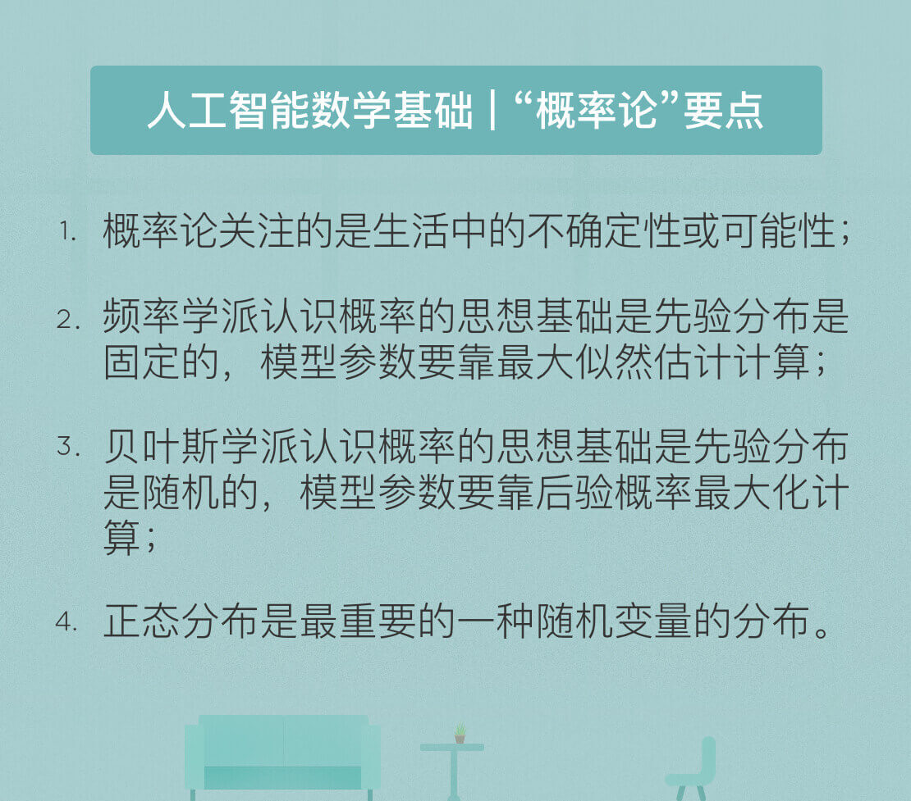

- 00 开篇词 人工智能：新时代的必修课.md
- 01 数学基础 九层之台，起于累土：线性代数.md
- 02 数学基础 月有阴晴圆缺，此事古难全：概率论.md
- 03 数学基础 窥一斑而知全豹：数理统计.md
- 04 数学基础 不畏浮云遮望眼：最优化方法.md
- 05 数学基础 万物皆数，信息亦然：信息论.md
- 06 数学基础 明日黄花迹难寻：形式逻辑.md
- 07 机器学习 数山有路，学海无涯：机器学习概论.md
- 08 机器学习 简约而不简单：线性回归.md
- 09 机器学习 大道至简：朴素贝叶斯方法.md
- 10 机器学习 衍化至繁：逻辑回归.md
- 11 机器学习 步步为营，有章可循：决策树.md
- 12 机器学习 穷则变，变则通：支持向量机.md
- 13 机器学习 三个臭皮匠，赛过诸葛亮：集成学习.md
- 14 机器学习 物以类聚，人以群分：聚类分析.md
- 15 机器学习 好钢用在刀刃上：降维学习.md
- 16 人工神经网络 道法自然，久藏玄冥：神经网络的生理学背景.md
- 17 人工神经网络 一个青年才俊的意外死亡：神经元与感知器.md
- 18 人工神经网络 左手信号，右手误差：多层感知器.md
- 19 人工神经网络 各人自扫门前雪：径向基函数神经网络.md
- 20 人工神经网络 看不见的手：自组织特征映射.md
- 21 人工神经网络 水无至清，人莫至察：模糊神经网络.md
- 22 深度学习 空山鸣响，静水流深：深度学习概述.md
- 23 深度学习 前方有路，未来可期：深度前馈网络.md
- 24 深度学习 小树不修不直溜：深度学习中的正则化.md
- 25 深度学习 玉不琢不成器：深度学习中的优化.md
- 26 深度学习 空竹里的秘密：自编码器.md
- 27 深度学习 困知勉行者勇：深度强化学习.md
- 28 深度学习框架下的神经网络 枯木逢春：深度信念网络.md
- 29 深度学习框架下的神经网络 见微知著：卷积神经网络.md
- 30 深度学习框架下的神经网络 昨日重现：循环神经网络.md
- 31 深度学习框架下的神经网络 左右互搏：生成式对抗网络.md
- 32 深度学习框架下的神经网络 三重门：长短期记忆网络.md
- 33 深度学习之外的人工智能 一图胜千言：概率图模型.md
- 34 深度学习之外的人工智能 乌合之众的逆袭：集群智能.md
- 35 深度学习之外的人工智能 授人以鱼不如授人以渔：迁移学习.md
- 36 深度学习之外的人工智能 滴水藏海：知识图谱.md
- 37 应用场景 你是我的眼：计算机视觉.md
- 38 应用场景 嘿, Siri：语音处理.md
- 39 应用场景 心有灵犀一点通：对话系统.md
- 40 应用场景 数字巴别塔：机器翻译.md
- 一键到达 人工神经网络复习课.md
- 一键到达 应用场景复习课.md
- 一键到达 数学基础复习课.md
- 一键到达 机器学习复习课.md
- 一键到达 深度学习之外的人工智能复习课.md
- 一键到达 深度学习复习课.md
- 一键到达 深度学习框架下的神经网络复习课.md
- 推荐阅读 我与人工智能的故事.md
- 新书 《裂变：秒懂人工智能的基础课》.md
- 直播回顾 机器学习必备的数学基础.md
- 第2季回归 这次我们来聊聊机器学习.md
- 结课 溯洄从之，道阻且长.md
- 课外谈 “人工智能基础课”之二三闲话.md
- （课外辅导）人工神经网络 拓展阅读参考书.md
- （课外辅导）数学基础 拓展阅读参考书.md
- （课外辅导）机器学习 拓展阅读参考书.md
- （课外辅导）深度学习 拓展阅读参考书.md
02 数学基础 月有阴晴圆缺，此事古难全：概率论
除了线性代数之外，概率论（probability theory）也是人工智能研究中必备的数学基础。随着连接主义学派的兴起，概率统计已经取代了数理逻辑，成为人工智能研究的主流工具。在数据爆炸式增长和计算力指数化增强的今天，概率论已经在机器学习中扮演了核心角色。
同线性代数一样，概率论也代表了一种看待世界的方式，其关注的焦点是无处不在的可能性。对随机事件发生的可能性进行规范的数学描述就是概率论的公理化过程。概率的公理化结构体现出的是对概率本质的一种认识。
将同一枚硬币抛掷10次，其正面朝上的次数既可能一次没有，也可能全部都是，换算成频率就分别对应着0%和100%。频率本身显然会随机波动，但随着重复试验的次数不断增加，特定事件出现的频率值就会呈现出稳定性，逐渐趋近于某个常数。
从事件发生的频率认识概率的方法被称为“频率学派”（frequentist probability），频率学派口中的“概率”，其实是一个可独立重复的随机实验中单个结果出现频率的极限。因为稳定的频率是统计规律性的体现，因而通过大量的独立重复试验计算频率，并用它来表征事件发生的可能性是一种合理的思路。
在概率的定量计算上，频率学派依赖的基础是古典概率模型。在古典概率模型中，试验的结果只包含有限个基本事件，且每个基本事件发生的可能性相同。如此一来，假设所有基本事件的数目为n，待观察的随机事件A中包含的基本事件数目为k，则古典概率模型下事件概率的计算公式为
\[P(A) = \\dfrac{k}{n} \]
从这一基本公式就可以推导出复杂的随机事件的概率。
前文中的概率定义针对都是单个随机事件，可如果要刻画两个随机事件之间的关系，这个定义就不够看了。在一场足球比赛中，球队1:0取胜和在0:2落后的情况下3:2翻盘的概率显然是不一样的。这就需要引入条件概率的概念。
条件概率（conditional probability）是根据已有信息对样本空间进行调整后得到的新的概率分布。假定有两个随机事件A和B，条件概率就是指事件A在事件B已经发生的条件下发生的概率，用以下公式表示
\[P(A|B) = \\dfrac{P(AB)}{P(B)} \]
上式中的\(P(AB)\)称为联合概率（joint probability），表示的是A和B两个事件共同发生的概率。如果联合概率等于两个事件各自概率的乘积，即\(P(AB) = P(A) \\cdot P(B)\)，说明这两个事件的发生互不影响，即两者相互独立。对于相互独立的事件，条件概率就是自身的概率，即\(P(A|B) = P(A)\)。
基于条件概率可以得出全概率公式（law of total probability）。全概率公式的作用在于将复杂事件的概率求解转化为在不同情况下发生的简单事件的概率求和，即
\[P(A) = \\sum_{i = 1}^{N}P(A|B_i)\\cdot P(B_i)\]
\[\\sum_{i = 1}^{N} P(B_i) = 1\]
全概率公式代表了频率学派解决概率问题的思路，即先做出一些假设（\(P(B_i)\)），再在这些假设下讨论随机事件的概率（\(P(A|B_i)\)）。
对全概率公式稍作整理，就演化出了求解“逆概率”这一重要问题。所谓“逆概率”解决的是在事件结果已经确定的条件下（\(P(A)\)），推断各种假设发生的可能性（\(P(B_i|A)\)）。由于这套理论首先由英国牧师托马斯·贝叶斯提出，因而其通用的公式形式被称为贝叶斯公式：
\[P(B_i|A)=\\frac{P(A|B_i)\\cdot P(B_i)}{\\sum _{j=1}^{N} P(A|B_j)\\cdot P(B_j)}\]
贝叶斯公式可以进一步抽象为贝叶斯定理（Bayes’ theorem）：
\[P(H|D) = \\dfrac{P(D|H) \\cdot P(H)}{P(D)}\]
式中的\(P(H)\)被称为先验概率（prior probability），即预先设定的假设成立的概率；\(P(D|H)\)被称为似然概率（likelihood function），是在假设成立的前提下观测到结果的概率；\(P(H|D)\)被称为后验概率（posterior probability），即在观测到结果的前提下假设成立的概率。
从科学研究的方法论来看，贝叶斯定理提供了一种全新的逻辑。它根据观测结果寻找合理的假设，或者说根据观测数据寻找最佳的理论解释，其关注的焦点在于后验概率。概率论的贝叶斯学派（Bayesian probability）正是诞生于这种理念。
在贝叶斯学派眼中，概率描述的是随机事件的可信程度。如果手机里的天气预报应用给出明天下雨的概率是85%，这就不能从频率的角度来解释了，而是意味着明天下雨这个事件的可信度是85%。
频率学派认为假设是客观存在且不会改变的，即存在固定的先验分布，只是作为观察者的我们无从知晓。因而在计算具体事件的概率时，要先确定概率分布的类型和参数，以此为基础进行概率推演。
相比之下，贝叶斯学派则认为固定的先验分布是不存在的，参数本身也是随机数。换言之，假设本身取决于观察结果，是不确定并且可以修正的。数据的作用就是对假设做出不断的修正，使观察者对概率的主观认识更加接近客观实际。
概率论是线性代数之外，人工智能的另一个理论基础，多数机器学习模型采用的都是基于概率论的方法。但由于实际任务中可供使用的训练数据有限，因而需要对概率分布的参数进行估计，这也是机器学习的核心任务。
概率的估计有两种方法：最大似然估计法（maximum likelihood estimation）和最大后验概率法（maximum a posteriori estimation），两者分别体现出频率学派和贝叶斯学派对概率的理解方式。
最大似然估计法的思想是使训练数据出现的概率最大化，依此确定概率分布中的未知参数，估计出的概率分布也就最符合训练数据的分布。最大后验概率法的思想则是根据训练数据和已知的其他条件，使未知参数出现的可能性最大化，并选取最可能的未知参数取值作为估计值。在估计参数时，最大似然估计法只需要使用训练数据，最大后验概率法除了数据外还需要额外的信息，就是贝叶斯公式中的先验概率。
从理论的角度来说，频率学派和贝叶斯学派各有千秋，都发挥着不可替代的作用。但具体到人工智能这一应用领域，基于贝叶斯定理的各种方法与人类的认知机制吻合度更高，在机器学习等领域中也扮演着更加重要的角色。
概率论的一个重要应用是描述随机变量（random variable）。根据取值空间的不同，随机变量可以分成两类：离散型随机变量（discrete random variable）和连续型随机变量（continuous random variable）。在实际应用中，需要对随机变量的每个可能取值的概率进行描述。
离散变量的每个可能的取值都具有大于0的概率，取值和概率之间一一对应的关系就是离散型随机变量的分布律，也叫概率质量函数（probability mass function）。概率质量函数在连续型随机变量上的对应就是概率密度函数（probability density function）。
需要说明的是，概率密度函数体现的并非连续型随机变量的真实概率，而是不同取值可能性之间的相对关系。对连续型随机变量来说，其可能取值的数目为不可列无限个，当归一化的概率被分配到这无限个点上时，每个点的概率都是个无穷小量，取极限的话就等于零。而概率密度函数的作用就是对这些无穷小量加以区分。虽然在\(x \\rightarrow \\infty\)时，\(1 / x\)和\(2 / x\)都是无穷小量，但后者永远是前者的2倍。这类相对意义而非绝对意义上的差别就可以被概率密度函数所刻画。对概率密度函数进行积分，得到的才是连续型随机变量的取值落在某个区间内的概率。
定义了概率质量函数与概率密度函数后，就可以给出一些重要分布的特性。重要的离散分布包括两点分布、二项分布和泊松分布，重要的连续分布则包括均匀分布、指数分布和正态分布。
- 两点分布（Bernoulli distribution）：适用于随机试验的结果是二进制的情形，事件发生/不发生的概率分别为\(p/(1 - p)\)。任何只有两个结果的随机试验都可以用两点分布描述，抛掷一次硬币的结果就可以视为等概率的两点分布。
- 二项分布（Binomial distribution）：将满足参数为p的两点分布的随机试验独立重复n次，事件发生的次数即满足参数为(n,p)的二项分布。二项分布的表达式可以写成\(P(X = k) = C^n_k \\cdot p ^ k \\cdot (1 - p) ^ {(n - k)}, 0 \\le k \\le n\)。
- 泊松分布（Poisson distribution）：放射性物质在规定时间内释放出的粒子数所满足的分布，参数为\(\\lambda\)的泊松分布表达式为\(P(X = k) = \\lambda ^ k \\cdot e ^ {-\\lambda} / (k!)\)。当二项分布中的n很大且p很小时，其概率值可以由参数为\(\\lambda = np\)的泊松分布的概率值近似。
- 均匀分布（uniform distribution）：在区间(a, b)上满足均匀分布的连续型随机变量，其概率密度函数为1 / (b - a)，这个变量落在区间(a, b)内任意等长度的子区间内的可能性是相同的。
- 指数分布（exponential distribution）：满足参数为\(\\theta\)指数分布的随机变量只能取正值，其概率密度函数为\(e ^ {-x / \\theta} / \\theta, x > 0\)。指数分布的一个重要特征是无记忆性：即P(X > s + t | X > s) = P(X > t)。
- 正态分布（normal distribution）：参数为正态分布的概率密度函数为
\[ f(x) = \\dfrac{1}{\\sqrt{2\\pi}\\sigma} \\cdot e ^ {-\\frac{(x - \\mu) ^ 2}{2\\sigma ^ 2}}\]
当\(\\mu = 0, \\sigma = 1\)时，上式称为标准正态分布。正态分布是最常见最重要的一种分布，自然界中的很多现象都近似地服从正态分布。
除了概率质量函数/概率密度函数之外，另一类描述随机变量的参数是其数字特征。数字特征是用于刻画随机变量某些特性的常数，包括数学期望（expected value）、方差（variance）和协方差（covariance）。
数学期望即均值，体现的是随机变量可能取值的加权平均，即根据每个取值出现的概率描述作为一个整体的随机变量的规律。方差表示的则是随机变量的取值与其数学期望的偏离程度。方差较小意味着随机变量的取值集中在数学期望附近，方差较大则意味着随机变量的取值比较分散。
数学期望和方差描述的都是单个随机变量的数字特征，如果要描述两个随机变量之间的相互关系，就需要用到协方差和相关系数。协方差度量了两个随机变量之间的线性相关性，即变量Y能否表示成以另一个变量X为自变量的\(aX+b\)的形式。
根据协方差可以进一步求出相关系数（correlation coefficient），相关系数是一个绝对值不大于1的常数，它等于1意味着两个随机变量满足完全正相关，等于-1意味着两者满足完全负相关，等于0则意味着两者不相关。需要说明的是，无论是协方差还是相关系数，刻画的都是线性相关的关系。如果随机变量之间的关系满足\(Y = X ^ 2\)，这样的非线性相关性就超出了协方差的表达能力。
今天我和你分享了人工智能必备的概率论基础，着重于抽象概念的解释而非具体的数学公式，其要点如下：
- 概率论关注的是生活中的不确定性或可能性；
- 频率学派认为先验分布是固定的，模型参数要靠最大似然估计计算；
- 贝叶斯学派认为先验分布是随机的，模型参数要靠后验概率最大化计算；
- 正态分布是最重要的一种随机变量的分布。
在今天的机器学习中，大量任务是根据已有的数据预测可能出现的情况，因而贝叶斯定理得到了广泛应用。那么在生活中，你能想到哪些实例，是从已有的观测结果反过来推演假设成立的呢？
欢迎发表你的观点。

© 2019 - 2023 Liangliang Lee. Powered by gin and hexo-theme-book.